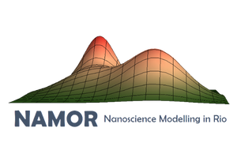

{% extends "base.html" %} {% block title %}RI-Calc{% endblock %} {% block content %}
<div class="container fret">
  <div>
      <div class="logoWrapper">
          
      </div>
    <div>
       
    </div>
    <div>
       
    </div>
  </div>
  <div class="fret__texto">
    <form method=post enctype=multipart/form-data action="{{url_for('ri_calc_submit')}}">

      <div class="texto__botao">
        Input file (.xlsx):<br>
        <input type="file" name="xif"><br>
      </div>
                    
      <div class="texto__botao">
        Decadic Abs. Coefficient file (.dat)<br>
        <input type="file" id="dacf" name="dacf"><br>
      </div>

      <input type="submit" class="texto__botao texto__submitBotao" value="Click to Calculate">
    </form>
    <input type="button" class="texto__botao texto__submitBotao" onclick="swapmode()" value="Swap mode">
    <footer class="texto__botao texto__footer">
      <p class="texto__paragrafo"> 
      Download some <a href="https://github.com/NanoCalc/RICalc/releases/download/3.0-beta/data_sample.zip"><b>sample data</b></a>, 
      <a href="https://github.com/NanoCalc/RICalc/releases/download/3.0-beta/spectral-data.zip"><b>spectral data for different compounds</b></a>,
      and <a href="https://github.com/NanoCalc/RICalc/releases"><b>RI-Calc binaries</b></a> on our GitHub page.
      </p>
    </footer>
  </div>
</div>
<script defer src="../static/js/swap_mode_ri.js"></script>
{% endblock %}
